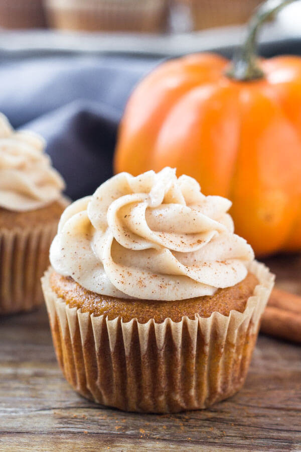

Pumpkin Cupcakes

Description
Pumpkiny delicious cupcakes! if youre reading this mitch text me "pumpkin waffles"
Ingredients
Steps
Preheat an oven to 375 degrees F (190 degrees C). Grease 24 muffin cups, or line with paper muffin liners. Sift together the flour, 1 teaspoon cinnamon, nutmeg, ginger, clove, allspice, salt, baking powder, and baking soda; set aside
Beat 1/2 cup of butter, the white sugar, and brown sugar with an electric mixer in a large bowl until light and fluffy. The mixture should be noticeably lighter in color. Add the room-temperature eggs one at a time, allowing each egg to blend into the butter mixture before adding the next. Stir in the milk and pumpkin puree after the last egg. Stir in the flour mixture, mixing until just incorporated. Pour the batter into the prepared muffin cups.
Bake in the preheated oven until golden and the tops spring back when lightly pressed, about 25 minutes. Cool in the pans for 5 minutes before removing to cool completely on a wire rack.